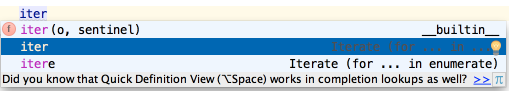
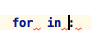

Live Templates let you generate many typical code constructs in seconds. For example, type iter:

Then press Tab and see what happens:

Use Tab to move between the template fields.
See Live Templates page of the Settings / Preferences | Editor dialog for more details.